Installation
Install the package from PyPI. The model can be downloaded automatically on first use.
pip install pyclefDocumentation
PyClef can be used through the desktop interface or called from Python. The generated results are grouped by score name for easier review.
Install the package from PyPI. The model can be downloaded automatically on first use.
pip install pyclefOpen the desktop workflow from Python or from the package entry point.
from pyclef import Pyclef
Pyclef()Each run can create annotations, MP3 audio, MIDI and synchronized MP4 video.
results_score-name/
score-name.mp3
score-name.mid
score-name.mp4
score-name_annotated_p1.jpgGuided interface tour
The desktop flow moves from score selection to progress tracking and result review. The screenshots adapt to the current website theme.
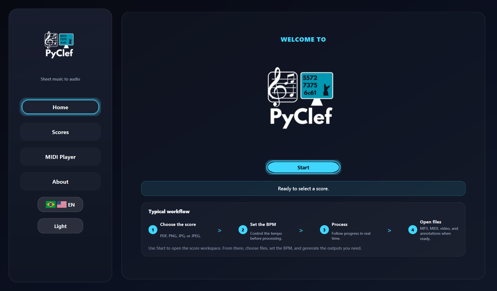
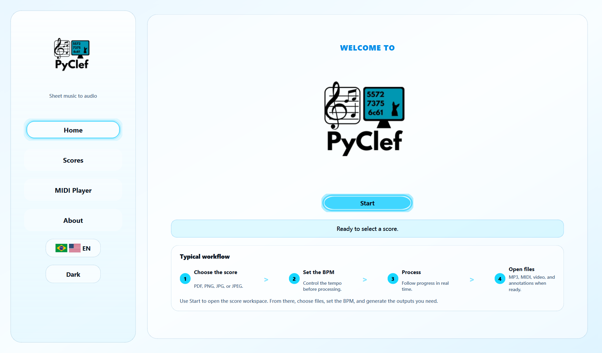
Use the Start button to move from the welcome screen into the score workspace.
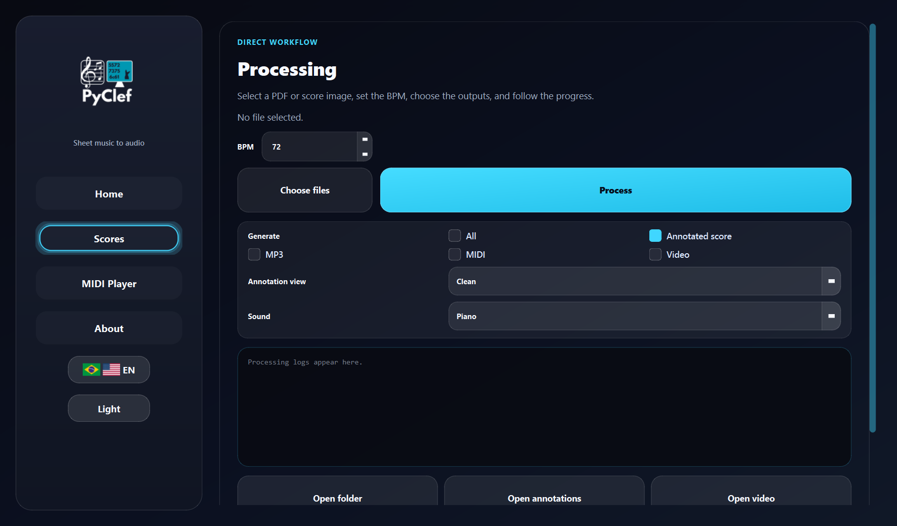
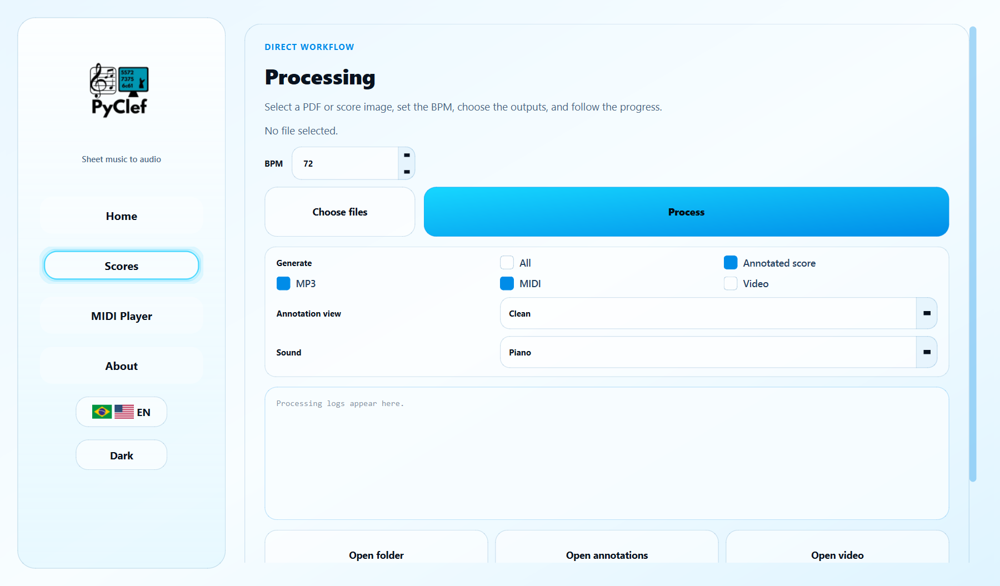
The Scores page centralizes file selection, BPM, output options, logs and result buttons.
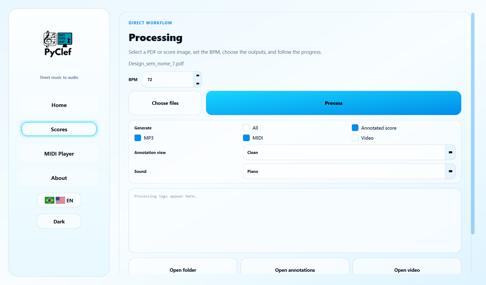
After selecting a PDF or image, enable the outputs you need: annotations, MP3, MIDI or video.
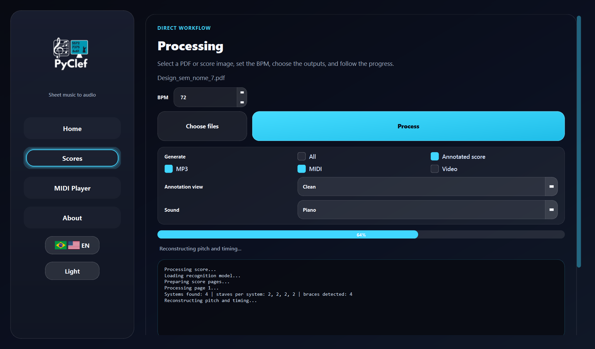
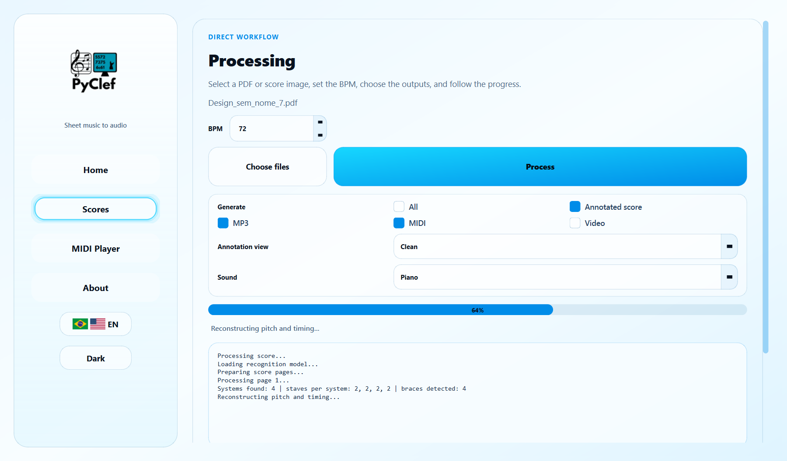
The progress bar and log panel show what PyClef is doing during detection, reconstruction and export.
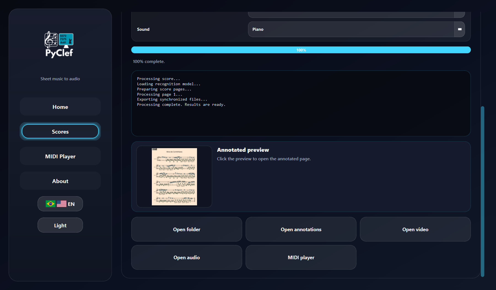
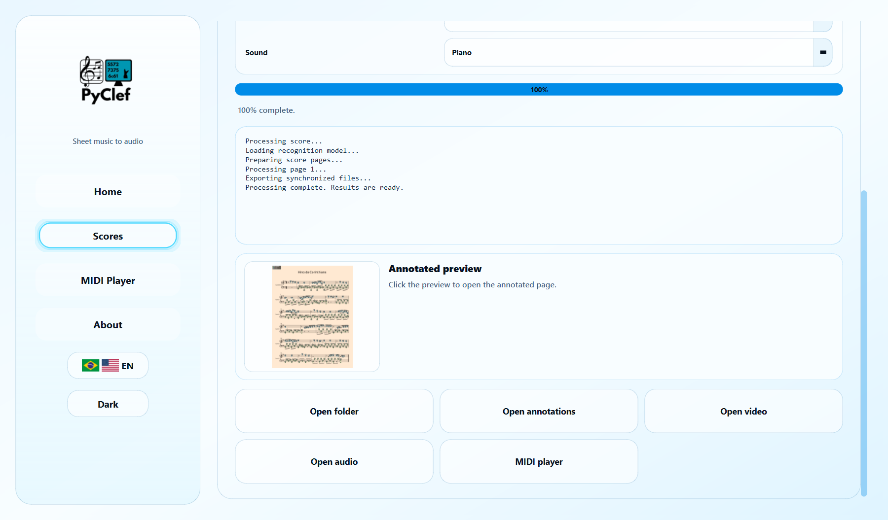
When processing finishes, use the result buttons to open the folder or generated files.
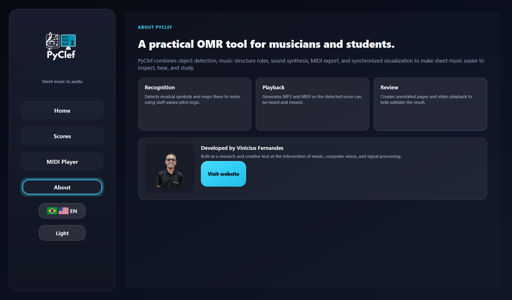
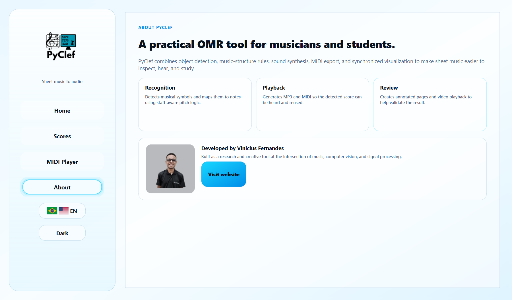
The About page summarizes the recognition, playback and review goals of the project.
MIDI Player
PyClef now includes a dedicated MIDI player window. It loads the generated MIDI, applies the piano SoundFont automatically and shows note timing with a waterfall view and responsive keyboard.
Notes fall toward the keyboard in sync with playback, making timing problems easier to inspect.
The piano range adapts to the MIDI file and labels white keys with note names.
Right-hand and left-hand notes use different colors, including darker tones for black-key notes.
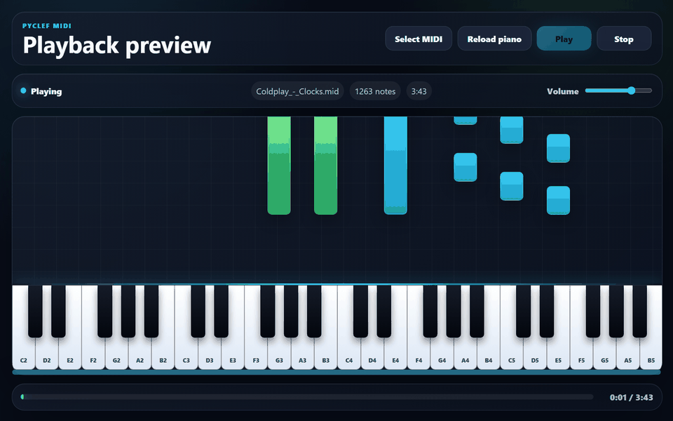
Use the player to inspect MIDI timing before sharing or exporting the final result.
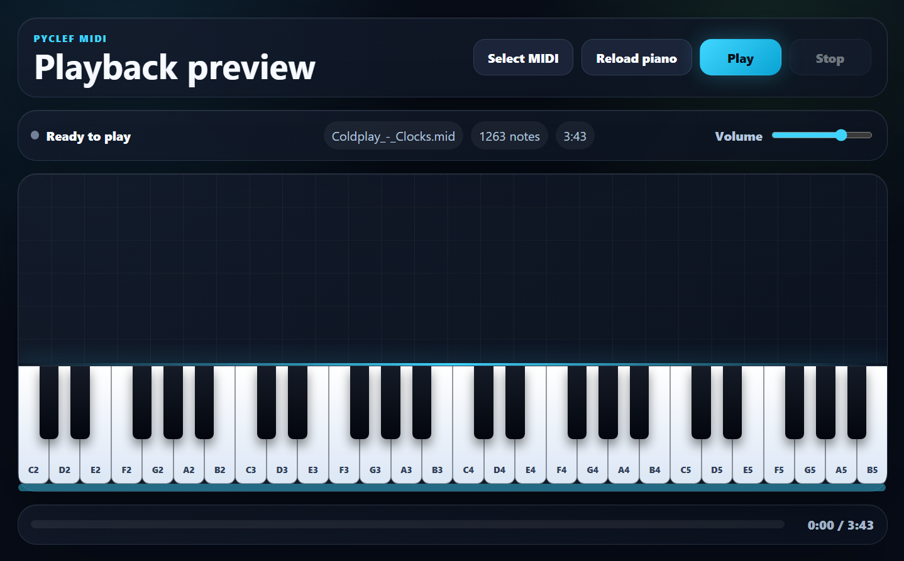
Recommended workflow
Use a clear PDF, PNG or JPG. Higher quality images improve symbol detection.
Generate only annotations for fast inspection, or include audio/MIDI/video when needed.
Use the labeled score image to verify note naming and structural interpretation.
Use MIDI, MP3 and video to audit the musical reconstruction from different perspectives.
Citation
If PyClef helps your work, cite the project. The MIRP paper will be available soon.
Silvestre, V. F., & Martins, S. A. M. (2026).
PyClef: Reconhecimento Óptico de Partituras com MIRP.